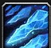
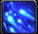
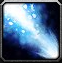
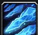
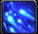
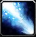
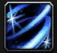

Frost Mage Rotation Guide
Frost Mage Rotation Guide
How to play Frost Mage
Frost Mage operates on a strict priority list rather than with a traditional resource system. That means all of your actions will be used in an order of highest value with each GCD, meaning you need to judge your current state throughout an encounter and do some predictions. There are some key concepts that tend to define the whole rotation:
Understanding Shatter Combos
Understanding Shatter Combos
The term Shatter combo is commonly used to refer to any combination of spells that is used to apply a Frozen effect to activate Shatter and deal a lot of quick damage, especially when multiple spells are cast at once so that they both benefit from a single Frozen effect.
Shatter Combos with Flurry
- Combo:
 Frostbolt/
Glacial Spike >
Flurry >
Ice Lance
> Ice Lance
Frostbolt/
Glacial Spike >
Flurry >
Ice Lance
> Ice Lance - This combo revolves around Flurry,
which applies two stacks of
 Winter's Chill
each time one of its three bolts hits the target. This combo is performed by spell queuing a Flurry
after another spell with a cast time to take advantage of spell travel times to get benefit from more than two stacks of
Winter's Chill because the spell cast before
Flurry will hit after the first bolt but before the third. This combo applies to freeze-immune enemies like raid bosses.
Winter's Chill
each time one of its three bolts hits the target. This combo is performed by spell queuing a Flurry
after another spell with a cast time to take advantage of spell travel times to get benefit from more than two stacks of
Winter's Chill because the spell cast before
Flurry will hit after the first bolt but before the third. This combo applies to freeze-immune enemies like raid bosses.
Shatter Combos with Freeze Effects
Frost Mages have many freeze spells that Root or Stun the target and also count them as being Frozen for spells like Shatter. These spells are all broken by damage, but will be active for a brief minimum duration allowing them to be comboed with damage spells when fighting targets like dungeon trash that can be Rooted or Stunned.
 Frost Nova
Frost Nova- Ice Nova
- Cone of Cold
 Ring of Frost
Ring of Frost- Freeze - This spell is special as it is cast by your Water Elemental, allowing it to be used regardless of what actions you are taking!
Examples of Shatter Combos with Freeze Spells
- Glacial Spike > freeze spell
- Frostbolt > freeze spell > Ice Lance
- Frostbolt/Glacial Spike > Freeze > Ice Lance
Single Target Rotation


AoE Rotation
Contrary to last season, The difference between Frostfire and Spellslinger is quite large in AoE...